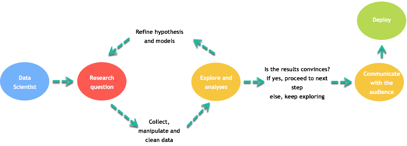
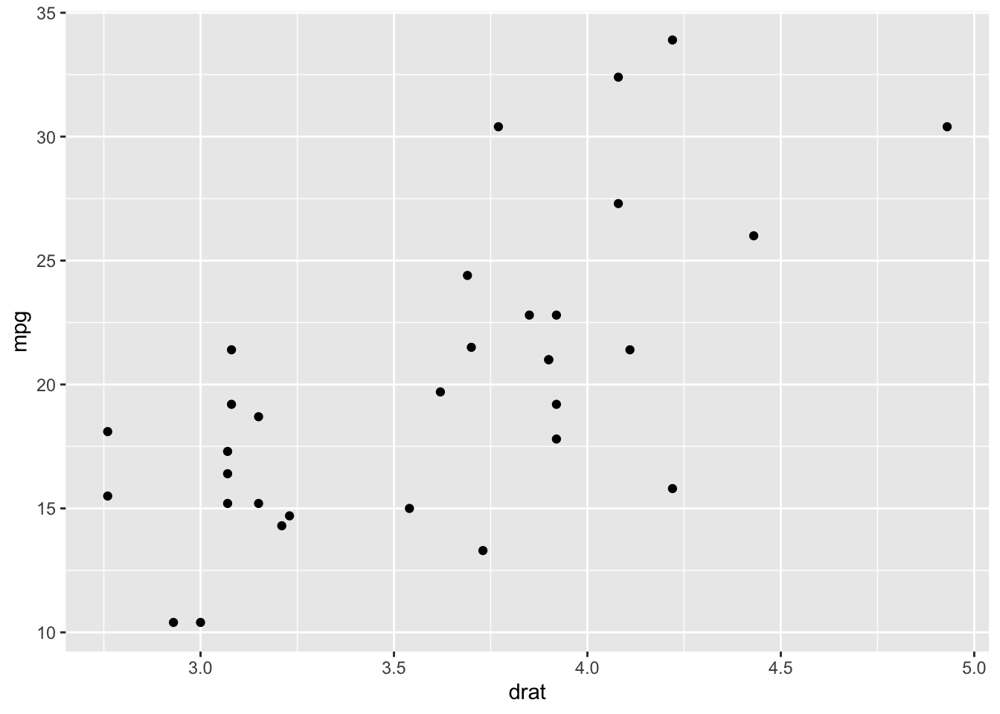
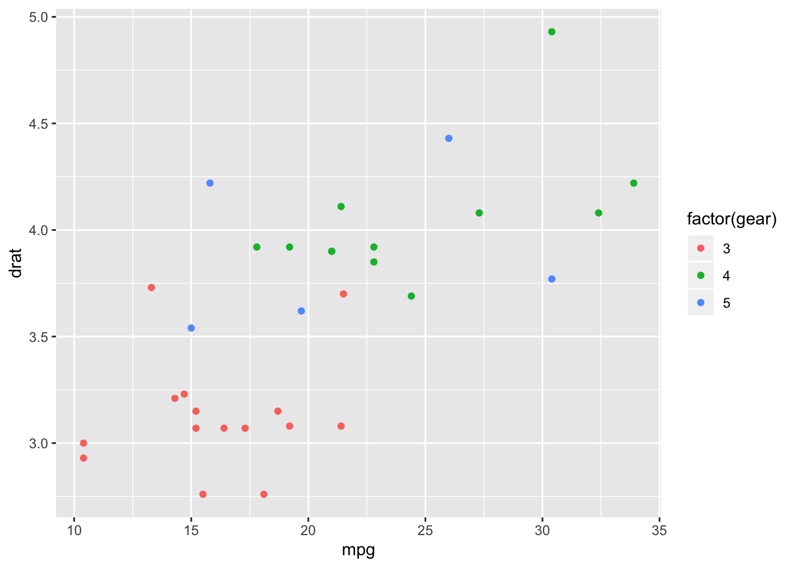
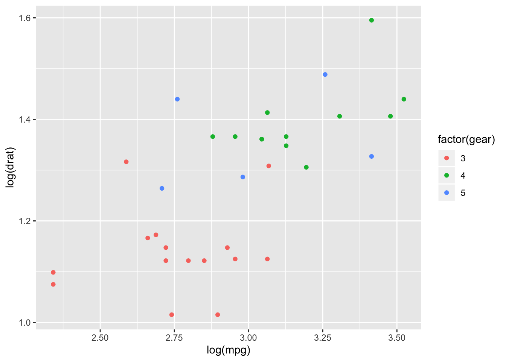
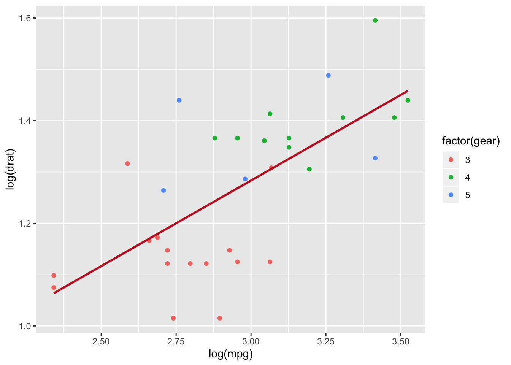
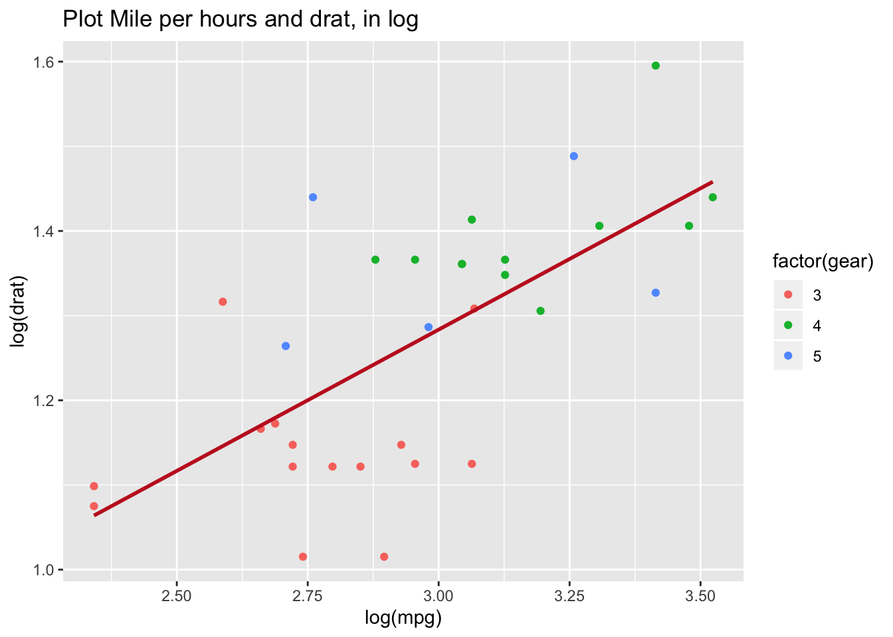
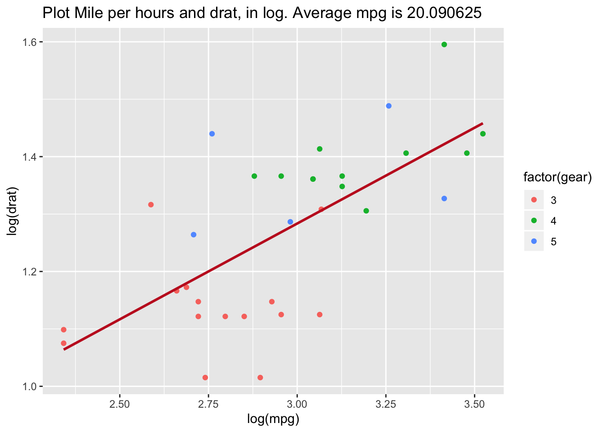
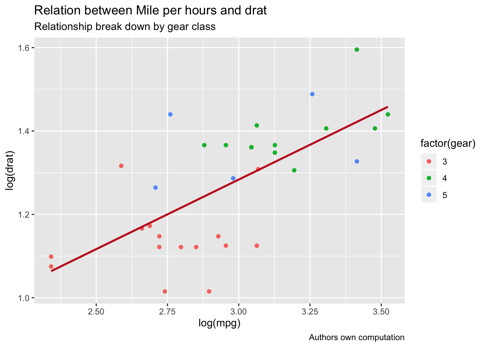
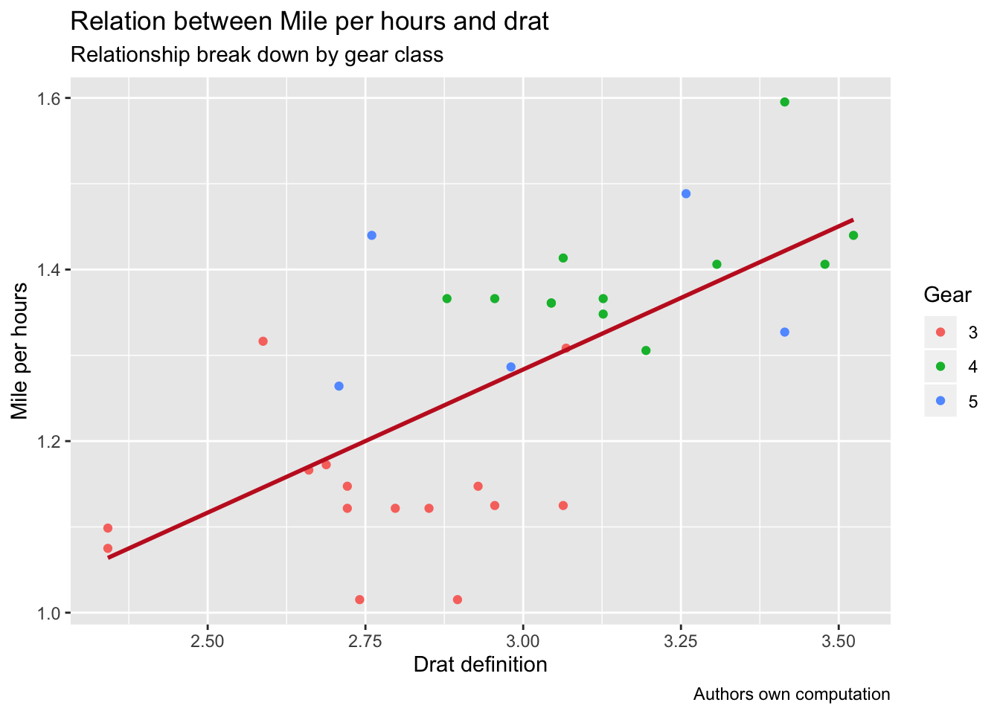
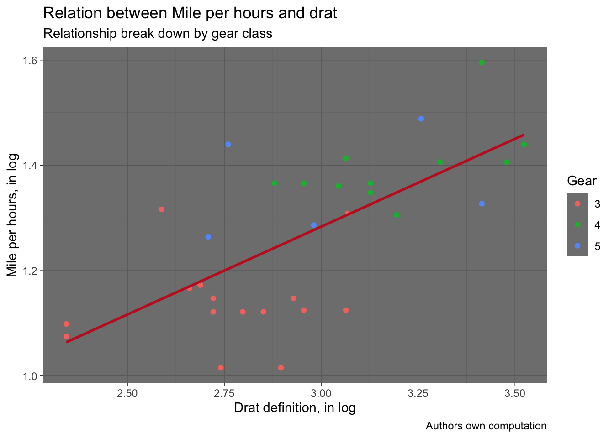

<!DOCTYPE html>

<html>

<head>

<meta charset="utf-8" />
<meta name="generator" content="pandoc" />
<meta http-equiv="X-UA-Compatible" content="IE=EDGE" />


<title>Lesson 18</title>

<script src="site_libs/jquery-1.11.3/jquery.min.js"></script>
<meta name="viewport" content="width=device-width, initial-scale=1" />
<link href="site_libs/bootstrap-3.3.5/css/flatly.min.css" rel="stylesheet" />
<script src="site_libs/bootstrap-3.3.5/js/bootstrap.min.js"></script>
<script src="site_libs/bootstrap-3.3.5/shim/html5shiv.min.js"></script>
<script src="site_libs/bootstrap-3.3.5/shim/respond.min.js"></script>
<script src="site_libs/jqueryui-1.11.4/jquery-ui.min.js"></script>
<link href="site_libs/tocify-1.9.1/jquery.tocify.css" rel="stylesheet" />
<script src="site_libs/tocify-1.9.1/jquery.tocify.js"></script>
<script src="site_libs/navigation-1.1/tabsets.js"></script>
<script src="site_libs/accessible-code-block-0.0.1/empty-anchor.js"></script>
<script src="site_libs/kePrint-0.0.1/kePrint.js"></script>
<link href="site_libs/lightable-0.0.1/lightable.css" rel="stylesheet" />
<link href="site_libs/font-awesome-5.1.0/css/all.css" rel="stylesheet" />
<link href="site_libs/font-awesome-5.1.0/css/v4-shims.css" rel="stylesheet" />
<!DOCTYPE html PUBLIC "-//W3C//DTD HTML 4.01//EN" "http://www.w3.org/TR/html4/strict.dtd">
<html>
<head>
  <meta http-equiv="Content-Type" content="text/html; charset=utf-8">
  <meta http-equiv="Content-Style-Type" content="text/css">
  <title></title>
  <meta name="Generator" content="Cocoa HTML Writer">
  <meta name="CocoaVersion" content="1504">
  <!-- this script changes the anchor position -->
  <!-- http://jsfiddle.net/ianclark001/rkocah23/ -->
<script>
(function(document, history, location) {
  var HISTORY_SUPPORT = !!(history && history.pushState);

  var anchorScrolls = {
    ANCHOR_REGEX: /^#[^ ]+$/,
    OFFSET_HEIGHT_PX: 65,

    /**
     * Establish events, and fix initial scroll position if a hash is provided.
     */
    init: function() {
      this.scrollToCurrent();
      $(window).on('hashchange', $.proxy(this, 'scrollToCurrent'));
      $('body').on('click', 'a', $.proxy(this, 'delegateAnchors'));
    },

    /**
     * Return the offset amount to deduct from the normal scroll position.
     * Modify as appropriate to allow for dynamic calculations
     */
    getFixedOffset: function() {
      return this.OFFSET_HEIGHT_PX;
    },

    /**
     * If the provided href is an anchor which resolves to an element on the
     * page, scroll to it.
     * @param  {String} href
     * @return {Boolean} - Was the href an anchor.
     */
    scrollIfAnchor: function(href, pushToHistory) {
      var match, anchorOffset;

      if(!this.ANCHOR_REGEX.test(href)) {
        return false;
      }

      match = document.getElementById(href.slice(1));

      if(match) {
        anchorOffset = $(match).offset().top - this.getFixedOffset();
        $('html, body').animate({ scrollTop: anchorOffset});

        // Add the state to history as-per normal anchor links
        if(HISTORY_SUPPORT && pushToHistory) {
          history.pushState({}, document.title, location.pathname + href);
        }
      }

      return !!match;
    },
    
    /**
     * Attempt to scroll to the current location's hash.
     */
    scrollToCurrent: function(e) {
      if(this.scrollIfAnchor(window.location.hash) && e) {
        e.preventDefault();
      }
    },

    /**
     * If the click event's target was an anchor, fix the scroll position.
     */
    delegateAnchors: function(e) {
      var elem = e.target;

      if(this.scrollIfAnchor(elem.getAttribute('href'), true)) {
        e.preventDefault();
      }
    }
  };

    $(document).ready($.proxy(anchorScrolls, 'init'));
})(window.document, window.history, window.location);
</script>

</head>
<body>
</body>
</html>

<style type="text/css">
  code{white-space: pre-wrap;}
  span.smallcaps{font-variant: small-caps;}
  span.underline{text-decoration: underline;}
  div.column{display: inline-block; vertical-align: top; width: 50%;}
  div.hanging-indent{margin-left: 1.5em; text-indent: -1.5em;}
  ul.task-list{list-style: none;}
    </style>


<style type="text/css">code{white-space: pre;}</style>
<style type="text/css" data-origin="pandoc">
code.sourceCode > span { display: inline-block; line-height: 1.25; }
code.sourceCode > span { color: inherit; text-decoration: inherit; }
code.sourceCode > span:empty { height: 1.2em; }
.sourceCode { overflow: visible; }
code.sourceCode { white-space: pre; position: relative; }
div.sourceCode { margin: 1em 0; }
pre.sourceCode { margin: 0; }
@media screen {
div.sourceCode { overflow: auto; }
}
@media print {
code.sourceCode { white-space: pre-wrap; }
code.sourceCode > span { text-indent: -5em; padding-left: 5em; }
}
pre.numberSource code
  { counter-reset: source-line 0; }
pre.numberSource code > span
  { position: relative; left: -4em; counter-increment: source-line; }
pre.numberSource code > span > a:first-child::before
  { content: counter(source-line);
    position: relative; left: -1em; text-align: right; vertical-align: baseline;
    border: none; display: inline-block;
    -webkit-touch-callout: none; -webkit-user-select: none;
    -khtml-user-select: none; -moz-user-select: none;
    -ms-user-select: none; user-select: none;
    padding: 0 4px; width: 4em;
    color: #aaaaaa;
  }
pre.numberSource { margin-left: 3em; border-left: 1px solid #aaaaaa;  padding-left: 4px; }
div.sourceCode
  {   }
@media screen {
code.sourceCode > span > a:first-child::before { text-decoration: underline; }
}
code span.al { color: #ff0000; font-weight: bold; } /* Alert */
code span.an { color: #60a0b0; font-weight: bold; font-style: italic; } /* Annotation */
code span.at { color: #7d9029; } /* Attribute */
code span.bn { color: #40a070; } /* BaseN */
code span.bu { } /* BuiltIn */
code span.cf { color: #007020; font-weight: bold; } /* ControlFlow */
code span.ch { color: #4070a0; } /* Char */
code span.cn { color: #880000; } /* Constant */
code span.co { color: #60a0b0; font-style: italic; } /* Comment */
code span.cv { color: #60a0b0; font-weight: bold; font-style: italic; } /* CommentVar */
code span.do { color: #ba2121; font-style: italic; } /* Documentation */
code span.dt { color: #902000; } /* DataType */
code span.dv { color: #40a070; } /* DecVal */
code span.er { color: #ff0000; font-weight: bold; } /* Error */
code span.ex { } /* Extension */
code span.fl { color: #40a070; } /* Float */
code span.fu { color: #06287e; } /* Function */
code span.im { } /* Import */
code span.in { color: #60a0b0; font-weight: bold; font-style: italic; } /* Information */
code span.kw { color: #007020; font-weight: bold; } /* Keyword */
code span.op { color: #666666; } /* Operator */
code span.ot { color: #007020; } /* Other */
code span.pp { color: #bc7a00; } /* Preprocessor */
code span.sc { color: #4070a0; } /* SpecialChar */
code span.ss { color: #bb6688; } /* SpecialString */
code span.st { color: #4070a0; } /* String */
code span.va { color: #19177c; } /* Variable */
code span.vs { color: #4070a0; } /* VerbatimString */
code span.wa { color: #60a0b0; font-weight: bold; font-style: italic; } /* Warning */

</style>
<script>
// apply pandoc div.sourceCode style to pre.sourceCode instead
(function() {
  var sheets = document.styleSheets;
  for (var i = 0; i < sheets.length; i++) {
    if (sheets[i].ownerNode.dataset["origin"] !== "pandoc") continue;
    try { var rules = sheets[i].cssRules; } catch (e) { continue; }
    for (var j = 0; j < rules.length; j++) {
      var rule = rules[j];
      // check if there is a div.sourceCode rule
      if (rule.type !== rule.STYLE_RULE || rule.selectorText !== "div.sourceCode") continue;
      var style = rule.style.cssText;
      // check if color or background-color is set
      if (rule.style.color === '' && rule.style.backgroundColor === '') continue;
      // replace div.sourceCode by a pre.sourceCode rule
      sheets[i].deleteRule(j);
      sheets[i].insertRule('pre.sourceCode{' + style + '}', j);
    }
  }
})();
</script>
<style type="text/css">
  pre:not([class]) {
    background-color: white;
  }
</style>


<style type="text/css">
h1 {
  font-size: 34px;
}
h1.title {
  font-size: 38px;
}
h2 {
  font-size: 30px;
}
h3 {
  font-size: 24px;
}
h4 {
  font-size: 18px;
}
h5 {
  font-size: 16px;
}
h6 {
  font-size: 12px;
}
.table th:not([align]) {
  text-align: left;
}
</style>


<link rel="stylesheet" href="style.css" type="text/css" />


<style type = "text/css">
.main-container {
  max-width: 940px;
  margin-left: auto;
  margin-right: auto;
}
code {
  color: inherit;
  background-color: rgba(0, 0, 0, 0.04);
}
img {
  max-width:100%;
}
.tabbed-pane {
  padding-top: 12px;
}
.html-widget {
  margin-bottom: 20px;
}
button.code-folding-btn:focus {
  outline: none;
}
summary {
  display: list-item;
}
</style>


<style type="text/css">
/* padding for bootstrap navbar */
body {
  padding-top: 60px;
  padding-bottom: 40px;
}
/* offset scroll position for anchor links (for fixed navbar)  */
.section h1 {
  padding-top: 65px;
  margin-top: -65px;
}
.section h2 {
  padding-top: 65px;
  margin-top: -65px;
}
.section h3 {
  padding-top: 65px;
  margin-top: -65px;
}
.section h4 {
  padding-top: 65px;
  margin-top: -65px;
}
.section h5 {
  padding-top: 65px;
  margin-top: -65px;
}
.section h6 {
  padding-top: 65px;
  margin-top: -65px;
}
.dropdown-submenu {
  position: relative;
}
.dropdown-submenu>.dropdown-menu {
  top: 0;
  left: 100%;
  margin-top: -6px;
  margin-left: -1px;
  border-radius: 0 6px 6px 6px;
}
.dropdown-submenu:hover>.dropdown-menu {
  display: block;
}
.dropdown-submenu>a:after {
  display: block;
  content: " ";
  float: right;
  width: 0;
  height: 0;
  border-color: transparent;
  border-style: solid;
  border-width: 5px 0 5px 5px;
  border-left-color: #cccccc;
  margin-top: 5px;
  margin-right: -10px;
}
.dropdown-submenu:hover>a:after {
  border-left-color: #ffffff;
}
.dropdown-submenu.pull-left {
  float: none;
}
.dropdown-submenu.pull-left>.dropdown-menu {
  left: -100%;
  margin-left: 10px;
  border-radius: 6px 0 6px 6px;
}
</style>

<script>
// manage active state of menu based on current page
$(document).ready(function () {
  // active menu anchor
  href = window.location.pathname
  href = href.substr(href.lastIndexOf('/') + 1)
  if (href === "")
    href = "index.html";
  var menuAnchor = $('a[href="' + href + '"]');

  // mark it active
  menuAnchor.parent().addClass('active');

  // if it's got a parent navbar menu mark it active as well
  menuAnchor.closest('li.dropdown').addClass('active');
});
</script>

<!-- tabsets -->

<style type="text/css">
.tabset-dropdown > .nav-tabs {
  display: inline-table;
  max-height: 500px;
  min-height: 44px;
  overflow-y: auto;
  background: white;
  border: 1px solid #ddd;
  border-radius: 4px;
}

.tabset-dropdown > .nav-tabs > li.active:before {
  content: "";
  font-family: 'Glyphicons Halflings';
  display: inline-block;
  padding: 10px;
  border-right: 1px solid #ddd;
}

.tabset-dropdown > .nav-tabs.nav-tabs-open > li.active:before {
  content: "&#xe258;";
  border: none;
}

.tabset-dropdown > .nav-tabs.nav-tabs-open:before {
  content: "";
  font-family: 'Glyphicons Halflings';
  display: inline-block;
  padding: 10px;
  border-right: 1px solid #ddd;
}

.tabset-dropdown > .nav-tabs > li.active {
  display: block;
}

.tabset-dropdown > .nav-tabs > li > a,
.tabset-dropdown > .nav-tabs > li > a:focus,
.tabset-dropdown > .nav-tabs > li > a:hover {
  border: none;
  display: inline-block;
  border-radius: 4px;
  background-color: transparent;
}

.tabset-dropdown > .nav-tabs.nav-tabs-open > li {
  display: block;
  float: none;
}

.tabset-dropdown > .nav-tabs > li {
  display: none;
}
</style>

<!-- code folding -->


<style type="text/css">

#TOC {
  margin: 25px 0px 20px 0px;
}
@media (max-width: 768px) {
#TOC {
  position: relative;
  width: 100%;
}
}

@media print {
.toc-content {
  /* see https://github.com/w3c/csswg-drafts/issues/4434 */
  float: right;
}
}

.toc-content {
  padding-left: 30px;
  padding-right: 40px;
}

div.main-container {
  max-width: 1200px;
}

div.tocify {
  width: 20%;
  max-width: 260px;
  max-height: 85%;
}

@media (min-width: 768px) and (max-width: 991px) {
  div.tocify {
    width: 25%;
  }
}

@media (max-width: 767px) {
  div.tocify {
    width: 100%;
    max-width: none;
  }
}

.tocify ul, .tocify li {
  line-height: 20px;
}

.tocify-subheader .tocify-item {
  font-size: 0.90em;
}

.tocify .list-group-item {
  border-radius: 0px;
}


</style>


</head>

<body>


<div class="container-fluid main-container">


<!-- setup 3col/9col grid for toc_float and main content  -->
<div class="row-fluid">
<div class="col-xs-12 col-sm-4 col-md-3">
<div id="TOC" class="tocify">
</div>
</div>

<div class="toc-content col-xs-12 col-sm-8 col-md-9">


<div class="navbar navbar-default  navbar-fixed-top" role="navigation">
  <div class="container">
    <div class="navbar-header">
      <button type="button" class="navbar-toggle collapsed" data-toggle="collapse" data-target="#navbar">
        <span class="icon-bar"></span>
        <span class="icon-bar"></span>
        <span class="icon-bar"></span>
      </button>
      <a class="navbar-brand" href="index.html">An R Tutorial for Beginners</a>
    </div>
    <div id="navbar" class="navbar-collapse collapse">
      <ul class="nav navbar-nav">
        <li>
  <a href="index.html">
    <span class="fas fa-home"></span>
     
    Home
  </a>
</li>
<li>
  <a href="about.html">
    <span class="fas fa-info-circle"></span>
     
    About
  </a>
</li>
<li class="dropdown">
  <a href="#" class="dropdown-toggle" data-toggle="dropdown" role="button" aria-expanded="false">
    <span class="fas fa-bars"></span>
     
    Lessons
     
    <span class="caret"></span>
  </a>
  <ul class="dropdown-menu" role="menu">
    <li class="dropdown-submenu">
      <a href="#" class="dropdown-toggle" data-toggle="dropdown" role="button" aria-expanded="false">Introduction</a>
      <ul class="dropdown-menu" role="menu">
        <li>
          <a href="R-course_lesson-1.html">Lesson 1</a>
        </li>
        <li>
          <a href="R-course_lesson-2.html">Lesson 2</a>
        </li>
        <li>
          <a href="R-course_lesson-3.html">Lesson 3</a>
        </li>
        <li>
          <a href="R-course_lesson-4.html">Lesson 4</a>
        </li>
      </ul>
    </li>
    <li class="dropdown-submenu">
      <a href="#" class="dropdown-toggle" data-toggle="dropdown" role="button" aria-expanded="false">Data Preparation</a>
      <ul class="dropdown-menu" role="menu">
        <li>
          <a href="R-course_lesson-5.html">Lesson 5</a>
        </li>
        <li>
          <a href="R-course_lesson-6.html">Lesson 6</a>
        </li>
        <li>
          <a href="R-course_lesson-7.html">Lesson 7</a>
        </li>
        <li>
          <a href="R-course_lesson-8.html">Lesson 8</a>
        </li>
        <li>
          <a href="R-course_lesson-9.html">Lesson 9</a>
        </li>
      </ul>
    </li>
    <li class="dropdown-submenu">
      <a href="#" class="dropdown-toggle" data-toggle="dropdown" role="button" aria-expanded="false">Programming</a>
      <ul class="dropdown-menu" role="menu">
        <li>
          <a href="R-course_lesson-10.html">Lesson 10</a>
        </li>
        <li>
          <a href="R-course_lesson-11.html">Lesson 11</a>
        </li>
        <li>
          <a href="R-course_lesson-12.html">Lesson 12</a>
        </li>
        <li>
          <a href="R-course_lesson-13.html">Lesson 13</a>
        </li>
        <li>
          <a href="R-course_lesson-14.html">Lesson 14</a>
        </li>
        <li>
          <a href="R-course_lesson-15.html">Lesson 15</a>
        </li>
        <li>
          <a href="R-course_lesson-16.html">Lesson 16</a>
        </li>
        <li>
          <a href="R-course_lesson-17.html">Lesson 17</a>
        </li>
      </ul>
    </li>
    <li class="dropdown-submenu">
      <a href="#" class="dropdown-toggle" data-toggle="dropdown" role="button" aria-expanded="false">Data Analysis</a>
      <ul class="dropdown-menu" role="menu">
        <li>
          <a href="R-course_lesson-18.html">Lesson 18</a>
        </li>
        <li>
          <a href="R-course_lesson-19.html">Lesson 19</a>
        </li>
        <li>
          <a href="R-course_lesson-20.html">Lesson 20</a>
        </li>
        <li>
          <a href="R-course_lesson-21.html">Lesson 21</a>
        </li>
        <li>
          <a href="R-course_lesson-22.html">Lesson 22</a>
        </li>
      </ul>
    </li>
  </ul>
</li>
      </ul>
      <ul class="nav navbar-nav navbar-right">
        
      </ul>
    </div><!--/.nav-collapse -->
  </div><!--/.container -->
</div><!--/.navbar -->

<div class="fluid-row" id="header">


<h1 class="title toc-ignore">Scatter Plot in R using ggplot2 (with Example)</h1>

</div>


<p>Graphs are the third part of the process of data analysis. The first part is about <strong>data extraction</strong>, the second part deals with <strong>cleaning and manipulating the data</strong>. At last, the data scientist may need to <strong>communicate his results graphically</strong>.</p>
<p>The job of the data scientist can be reviewed in the following picture</p>
<p>The first task of a data scientist is to define a research question. This research question depends on the objectives and goals of the project.</p>
<ul>
<li>After that, one of the most prominent tasks is the feature engineering. The data scientist needs to collect, manipulate and clean the data</li>
<li>When this step is completed, he can start to explore the dataset. Sometimes, it is necessary to refine and change the original hypothesis due to a new discovery</li>
<li>When the explanatory analysis is achieved, the data scientist has to consider the capacity of the reader to understand the underlying concepts and models</li>
<li>His results should be presented in a format that all stakeholders can understand. One of the best methods to communicate the results is through a graph</li>
<li>Graphs are an incredible tool to simplify complex analysis.</li>
</ul>
<p align="center">

</p>
<div id="ggplot2-package" class="section level1">
<h1>ggplot2 package</h1>
<p>This part of the tutorial focuses on how to make graphs/charts with R.</p>
<p>In this tutorial, you are going to use ggplot2 package. This package is built upon the consistent underlying of the book Grammar of graphics written by Wilkinson, 2005. ggplot2 is very flexible, incorporates many themes and plot specification at a high level of abstraction. With ggplot2, you can’t plot 3-dimensional graphics and create interactive graphics.</p>
<p>In ggplot2, a graph is composed of the following arguments:</p>
<ul>
<li>data</li>
<li>aesthetic mapping</li>
<li>geometric object</li>
<li>statistical transformations</li>
<li>scales</li>
<li>coordinate system</li>
<li>position adjustments</li>
<li>faceting</li>
</ul>
<p>You will learn how to control those arguments in the tutorial.</p>
<p>The basic syntax of ggplot2 is:</p>
<div class="sourceCode" id="cb1"><pre class="sourceCode r"><code class="sourceCode r"><span id="cb1-1"><a href="#cb1-1"></a><span class="kw">ggplot</span>(data, <span class="dt">mapping=</span><span class="kw">aes</span>()) <span class="op">+</span><span class="st"> </span>geometric object </span></code></pre></div>
<p><strong>Arguments:</strong></p>
<ul>
<li>data: Dataset used to plot the graph</li>
<li>mapping: Control the x and y-axis</li>
<li>geometric object: The type of plot you want to show. The most common object are:
<ul>
<li>Point: <code>geom_point()</code></li>
<li>Bar: <code>geom_bar()</code></li>
<li>Line: <code>geom_line()</code></li>
<li>Histogram: <code>geom_histogram()</code></li>
</ul></li>
</ul>
</div>
<div id="scatterplot" class="section level1">
<h1>Scatterplot</h1>
<p>Let’s see how ggplot works with the mtcars dataset. You start by plotting a scatterplot of the mpg variable and drat variable.</p>
<div id="basic-scatter-plot" class="section level2">
<h2>Basic scatter plot</h2>
<div class="sourceCode" id="cb2"><pre class="sourceCode r"><code class="sourceCode r"><span id="cb2-1"><a href="#cb2-1"></a><span class="kw">library</span>(ggplot2)</span>
<span id="cb2-2"><a href="#cb2-2"></a><span class="kw">ggplot</span>(mtcars, <span class="kw">aes</span>(<span class="dt">x =</span> drat, <span class="dt">y =</span> mpg)) <span class="op">+</span><span class="st"> </span><span class="kw">geom_point</span>()</span></code></pre></div>
<p></p>
<p><strong>Code Explanation</strong></p>
<ul>
<li>You first pass the dataset mtcars to ggplot.</li>
<li>Inside the aes() argument, you add the x-axis and y-axis.</li>
<li>The + sign means you want R to keep reading the code. It makes the code more readable by breaking it.</li>
<li>Use geom_point() for the geometric object.</li>
</ul>
</div>
<div id="scatter-plot-with-groups" class="section level2">
<h2>Scatter plot with groups</h2>
<p>Sometimes, it can be interesting to distinguish the values by a group of data (i.e. factor level data).</p>
<div class="sourceCode" id="cb3"><pre class="sourceCode r"><code class="sourceCode r"><span id="cb3-1"><a href="#cb3-1"></a><span class="kw">ggplot</span>(mtcars, <span class="kw">aes</span>(<span class="dt">x =</span> mpg, <span class="dt">y =</span> drat)) <span class="op">+</span><span class="st"> </span><span class="kw">geom_point</span>(<span class="kw">aes</span>(<span class="dt">color =</span> <span class="kw">factor</span>(gear)))</span></code></pre></div>
<p></p>
<p><strong>Code Explanation</strong></p>
<ul>
<li>The aes() inside the geom_point() controls the color of the group. The group should be a factor variable. Thus, you convert the variable gear in a factor.</li>
<li>Altogether, you have the code aes(color = factor(gear)) that change the color of the dots.</li>
</ul>
</div>
<div id="change-axis" class="section level2">
<h2>Change axis</h2>
<p>Rescale the data is a big part of the data scientist job. In rare occasion data comes in a nice bell shape. One solution to make your data less sensitive to outliers is to rescale them.</p>
<div class="sourceCode" id="cb4"><pre class="sourceCode r"><code class="sourceCode r"><span id="cb4-1"><a href="#cb4-1"></a><span class="kw">ggplot</span>(mtcars, <span class="kw">aes</span>(<span class="dt">x =</span> <span class="kw">log</span>(mpg), <span class="dt">y =</span> <span class="kw">log</span>(drat))) <span class="op">+</span><span class="st"> </span><span class="kw">geom_point</span>(<span class="kw">aes</span>(<span class="dt">color =</span> <span class="kw">factor</span>(gear)))</span></code></pre></div>
<p></p>
<p><strong>Code Explanation</strong></p>
<ul>
<li>You transform the x and y variables in log() directly inside the aes() mapping.</li>
</ul>
<p>Note that any other transformation can be applied such as standardization or normalization.</p>
</div>
</div>
<div id="scatter-plot-with-fitted-values" class="section level1">
<h1>Scatter plot with fitted values</h1>
<p>You can add another level of information to the graph. You can plot the fitted value of a linear regression.</p>
<div class="sourceCode" id="cb5"><pre class="sourceCode r"><code class="sourceCode r"><span id="cb5-1"><a href="#cb5-1"></a>my_graph &lt;-<span class="st"> </span><span class="kw">ggplot</span>(mtcars, <span class="kw">aes</span>(<span class="dt">x =</span> <span class="kw">log</span>(mpg), <span class="dt">y =</span> <span class="kw">log</span>(drat))) <span class="op">+</span></span>
<span id="cb5-2"><a href="#cb5-2"></a><span class="st">    </span><span class="kw">geom_point</span>(<span class="kw">aes</span>(<span class="dt">color =</span> <span class="kw">factor</span>(gear))) <span class="op">+</span></span>
<span id="cb5-3"><a href="#cb5-3"></a><span class="st">    </span><span class="kw">stat_smooth</span>(<span class="dt">method =</span> <span class="st">&quot;lm&quot;</span>,</span>
<span id="cb5-4"><a href="#cb5-4"></a>        <span class="dt">col =</span> <span class="st">&quot;#C42126&quot;</span>,</span>
<span id="cb5-5"><a href="#cb5-5"></a>        <span class="dt">se =</span> <span class="ot">FALSE</span>,</span>
<span id="cb5-6"><a href="#cb5-6"></a>        <span class="dt">size =</span> <span class="dv">1</span>)</span>
<span id="cb5-7"><a href="#cb5-7"></a>my_graph</span></code></pre></div>
<p></p>
<p><strong>Code Explanation</strong></p>
<ul>
<li>graph: You store your graph into the variable graph. It is helpful for further use or avoid too complex line of codes</li>
<li>The argument stat_smooth() controls for the smoothing method</li>
<li>method = “lm”: Linear regression</li>
<li>col = “#C42126”: Code for the red color of the line</li>
<li>se = FALSE: Don’t display the standard error</li>
<li>size = 1: the size of the line is 1</li>
</ul>
<p>Note that other smoothing methods are available</p>
<ul>
<li>glm</li>
<li>gam</li>
<li>loess: default value</li>
</ul>
<div id="add-information-to-the-graph" class="section level2">
<h2>Add information to the graph</h2>
<p>So far, we haven’t added information in the graphs. Graphs need to be informative. The reader should see the story behind the data analysis just by looking at the graph without referring additional documentation. Hence, graphs need good labels. You can add labels with labs()function.</p>
<p>The basic syntax for lab() is :</p>
<div class="sourceCode" id="cb6"><pre class="sourceCode r"><code class="sourceCode r"><span id="cb6-1"><a href="#cb6-1"></a><span class="kw">lab</span>(<span class="dt">title =</span> <span class="st">&quot;Hello Gianluca&quot;</span>)</span></code></pre></div>
<p><strong>Argument:</strong> - title: Control the title. It is possible to change or add title with:<br />
- subtitle: Add subtitle below title<br />
- caption: Add caption below the graph<br />
- x: rename x-axis<br />
- y: rename y-axis</p>
<p>Example: <code>lab(title = "Hello Gianluca", subtitle = "My first plot")</code></p>
</div>
<div id="add-a-title" class="section level2">
<h2>Add a title</h2>
<p>One mandatory information to add is obviously a title.</p>
<div class="sourceCode" id="cb7"><pre class="sourceCode r"><code class="sourceCode r"><span id="cb7-1"><a href="#cb7-1"></a>my_graph <span class="op">+</span><span class="st"> </span><span class="kw">labs</span>(<span class="dt">title =</span> <span class="st">&quot;Plot Mile per hours and drat, in log&quot;</span>)</span></code></pre></div>
<p></p>
<p><strong>Code Explanation</strong></p>
<ul>
<li>my_graph: You use the graph you stored. It avoids rewriting all the codes each time you add new information to the graph.</li>
<li>You wrap the title inside the lab().</li>
<li>Code for the red color of the line</li>
<li>se = FALSE: Don’t display the standard error</li>
<li>size = 1: the size of the line is 1</li>
</ul>
</div>
<div id="add-a-title-with-a-dynamic-name" class="section level2">
<h2>Add a title with a dynamic name</h2>
<p>A dynamic title is helpful to add more precise information in the title.</p>
<p>You can use the paste() function to print static text and dynamic text. The basic syntax of paste() is:</p>
<div class="sourceCode" id="cb8"><pre class="sourceCode r"><code class="sourceCode r"><span id="cb8-1"><a href="#cb8-1"></a><span class="kw">paste</span>(<span class="st">&quot;This is a text&quot;</span>, A)</span></code></pre></div>
<p><strong>Arguments:</strong> - " ": Text inside the quotation marks are the static text - A: Display the variable stored in A - Note you can add as much static text and variable as you want. You need to separate them with a comma</p>
<p><strong>Example:</strong></p>
<div class="sourceCode" id="cb9"><pre class="sourceCode r"><code class="sourceCode r"><span id="cb9-1"><a href="#cb9-1"></a>A &lt;-<span class="st"> </span><span class="dv">2010</span></span>
<span id="cb9-2"><a href="#cb9-2"></a><span class="kw">paste</span>(<span class="st">&quot;The first year is&quot;</span>, A)</span></code></pre></div>
<pre><code>## [1] &quot;The first year is 2010&quot;</code></pre>
<div class="sourceCode" id="cb11"><pre class="sourceCode r"><code class="sourceCode r"><span id="cb11-1"><a href="#cb11-1"></a>B &lt;-<span class="st"> </span><span class="dv">2018</span></span>
<span id="cb11-2"><a href="#cb11-2"></a><span class="kw">paste</span>(<span class="st">&quot;The first year is&quot;</span>, A, <span class="st">&quot;and the last year is&quot;</span>, B)</span></code></pre></div>
<pre><code>## [1] &quot;The first year is 2010 and the last year is 2018&quot;</code></pre>
<p>You can add a dynamic name to our graph, namely the average of mpg.</p>
<div class="sourceCode" id="cb13"><pre class="sourceCode r"><code class="sourceCode r"><span id="cb13-1"><a href="#cb13-1"></a>mean_mpg &lt;-<span class="st"> </span><span class="kw">mean</span>(mtcars<span class="op">$</span>mpg)</span>
<span id="cb13-2"><a href="#cb13-2"></a>my_graph <span class="op">+</span><span class="st"> </span><span class="kw">labs</span>(<span class="dt">title =</span> <span class="kw">paste</span>(<span class="st">&quot;Plot Mile per hours and drat, in log. Average mpg is&quot;</span>, mean_mpg))</span></code></pre></div>
<p></p>
<p><strong>Code Explanation</strong></p>
<ul>
<li>You create the average of mpg with mean(mtcars$mpg) stored in mean_mpg variable</li>
<li>You use the paste() with mean_mpg to create a dynamic title returning the mean value of mpg</li>
</ul>
</div>
<div id="add-a-subtitle" class="section level2">
<h2>Add a subtitle</h2>
<p>Two additional detail can make your graph more explicit. You are talking about the subtitle and the caption. The subtitle goes right below the title. The caption can inform about who did the computation and the source of the data.</p>
<div class="sourceCode" id="cb14"><pre class="sourceCode r"><code class="sourceCode r"><span id="cb14-1"><a href="#cb14-1"></a>my_graph <span class="op">+</span></span>
<span id="cb14-2"><a href="#cb14-2"></a><span class="st">    </span><span class="kw">labs</span>(</span>
<span id="cb14-3"><a href="#cb14-3"></a>        <span class="dt">title =</span></span>
<span id="cb14-4"><a href="#cb14-4"></a>        <span class="st">&quot;Relation between Mile per hours and drat&quot;</span>,</span>
<span id="cb14-5"><a href="#cb14-5"></a>        <span class="dt">subtitle =</span></span>
<span id="cb14-6"><a href="#cb14-6"></a>        <span class="st">&quot;Relationship break down by gear class&quot;</span>,</span>
<span id="cb14-7"><a href="#cb14-7"></a>        <span class="dt">caption =</span> <span class="st">&quot;Authors own computation&quot;</span></span>
<span id="cb14-8"><a href="#cb14-8"></a>    )</span></code></pre></div>
<p></p>
<p><strong>Code Explanation</strong></p>
<ul>
<li>Inside the lab(), you added:
<ul>
<li>title = “Relation between Mile per hours and drat”: Add title</li>
<li>subtitle = “Relationship break down by gear class”: Add subtitle</li>
<li>caption = "Authors own computation: Add caption</li>
<li>You separate each new information with a comma, ,</li>
</ul></li>
<li>Note that you break the lines of code. It is not compulsory, and it only helps to read the code more easily</li>
</ul>
</div>
<div id="rename-x-axis-and-y-axis" class="section level2">
<h2>Rename x-axis and y-axis</h2>
<p>Variables itself in the dataset might not always be explicit or by convention use the _ when there are multiple words (i.e. GDP_CAP). You don’t want such name appear in your graph. It is important to change the name or add more details, like the units.</p>
<div class="sourceCode" id="cb15"><pre class="sourceCode r"><code class="sourceCode r"><span id="cb15-1"><a href="#cb15-1"></a>my_graph <span class="op">+</span></span>
<span id="cb15-2"><a href="#cb15-2"></a><span class="st">    </span><span class="kw">labs</span>(</span>
<span id="cb15-3"><a href="#cb15-3"></a>        <span class="dt">x =</span> <span class="st">&quot;Drat definition&quot;</span>,</span>
<span id="cb15-4"><a href="#cb15-4"></a>        <span class="dt">y =</span> <span class="st">&quot;Mile per hours&quot;</span>,</span>
<span id="cb15-5"><a href="#cb15-5"></a>        <span class="dt">color =</span> <span class="st">&quot;Gear&quot;</span>,</span>
<span id="cb15-6"><a href="#cb15-6"></a>        <span class="dt">title =</span> <span class="st">&quot;Relation between Mile per hours and drat&quot;</span>,</span>
<span id="cb15-7"><a href="#cb15-7"></a>        <span class="dt">subtitle =</span> <span class="st">&quot;Relationship break down by gear class&quot;</span>,</span>
<span id="cb15-8"><a href="#cb15-8"></a>        <span class="dt">caption =</span> <span class="st">&quot;Authors own computation&quot;</span></span>
<span id="cb15-9"><a href="#cb15-9"></a>    )</span></code></pre></div>
<p></p>
<p><strong>Code Explanation</strong></p>
<ul>
<li>Inside the lab(), you added:
<ul>
<li>x = “Drat definition”: Change the name of x-axis</li>
<li>y = “Mile per hours”: Change the name of y-axis</li>
</ul></li>
</ul>
</div>
<div id="control-the-scales" class="section level2">
<h2>Control the scales</h2>
<p>You can control the scale of the axis.</p>
<p>The function seq() is convenient when you need to create a sequence of number. The basic syntax is:</p>
<div class="sourceCode" id="cb16"><pre class="sourceCode r"><code class="sourceCode r"><span id="cb16-1"><a href="#cb16-1"></a><span class="kw">seq</span>(begin, last, <span class="dt">by =</span> x)</span></code></pre></div>
<p><strong>Arguments:</strong> - begin: First number of the sequence - last: Last number of the sequence - by = x: The step. For instance, if x is 2, the code adds 2 to <code>begin-1</code> until it reaches <code>last</code></p>
<p>For instance, if you want to create a range from 0 to 12 with a step of 3, you will have four numbers, 0 4 8 12</p>
<div class="sourceCode" id="cb17"><pre class="sourceCode r"><code class="sourceCode r"><span id="cb17-1"><a href="#cb17-1"></a><span class="kw">seq</span>(<span class="dv">0</span>, <span class="dv">12</span>, <span class="dv">4</span>)</span></code></pre></div>
<pre><code>## [1]  0  4  8 12</code></pre>
<p>You can control the scale of the x-axis and y-axis as below</p>
<div class="sourceCode" id="cb19"><pre class="sourceCode r"><code class="sourceCode r"><span id="cb19-1"><a href="#cb19-1"></a>my_graph <span class="op">+</span></span>
<span id="cb19-2"><a href="#cb19-2"></a><span class="st">    </span><span class="kw">scale_x_continuous</span>(<span class="dt">breaks =</span> <span class="kw">seq</span>(<span class="dv">1</span>, <span class="fl">3.6</span>, <span class="dt">by =</span> <span class="fl">0.2</span>)) <span class="op">+</span></span>
<span id="cb19-3"><a href="#cb19-3"></a><span class="st">    </span><span class="kw">scale_y_continuous</span>(<span class="dt">breaks =</span> <span class="kw">seq</span>(<span class="dv">1</span>, <span class="fl">1.6</span>, <span class="dt">by =</span> <span class="fl">0.1</span>)) <span class="op">+</span></span>
<span id="cb19-4"><a href="#cb19-4"></a><span class="st">    </span><span class="kw">labs</span>(</span>
<span id="cb19-5"><a href="#cb19-5"></a>        <span class="dt">x =</span> <span class="st">&quot;Drat definition&quot;</span>,</span>
<span id="cb19-6"><a href="#cb19-6"></a>        <span class="dt">y =</span> <span class="st">&quot;Mile per hours&quot;</span>,</span>
<span id="cb19-7"><a href="#cb19-7"></a>        <span class="dt">color =</span> <span class="st">&quot;Gear&quot;</span>,</span>
<span id="cb19-8"><a href="#cb19-8"></a>        <span class="dt">title =</span> <span class="st">&quot;Relation between Mile per hours and drat&quot;</span>,</span>
<span id="cb19-9"><a href="#cb19-9"></a>        <span class="dt">subtitle =</span> <span class="st">&quot;Relationship break down by gear class&quot;</span>,</span>
<span id="cb19-10"><a href="#cb19-10"></a>        <span class="dt">caption =</span> <span class="st">&quot;Authors own computation&quot;</span></span>
<span id="cb19-11"><a href="#cb19-11"></a>    )</span></code></pre></div>
<p></p>
<p><strong>Code Explanation</strong></p>
<ul>
<li>The function scale_y_continuous() controls the y-axis</li>
<li>The function scale_x_continuous() controls the x-axis.</li>
<li>The parameter breaks controls the split of the axis. You can manually add the sequence of number or use the seq()function:
<ul>
<li>seq(1, 3.6, by = 0.2): Create six numbers from 2.4 to 3.4 with a step of 3</li>
<li>seq(1, 1.6, by = 0.1): Create seven numbers from 1 to 1.6 with a step of 1</li>
</ul></li>
</ul>
</div>
<div id="theme" class="section level2">
<h2>Theme</h2>
<p>Finally, R allows us to customize out plot with different themes. The library ggplot2 includes eights themes:</p>
<ul>
<li>theme_bw()</li>
<li>theme_light()</li>
<li>theme_classis()</li>
<li>theme_linedraw()</li>
<li>theme_dark()</li>
<li>theme_minimal()</li>
<li>theme_gray()</li>
<li>theme_void()</li>
</ul>
<div class="sourceCode" id="cb20"><pre class="sourceCode r"><code class="sourceCode r"><span id="cb20-1"><a href="#cb20-1"></a>my_graph <span class="op">+</span></span>
<span id="cb20-2"><a href="#cb20-2"></a><span class="st">    </span><span class="kw">theme_dark</span>() <span class="op">+</span></span>
<span id="cb20-3"><a href="#cb20-3"></a><span class="st">    </span><span class="kw">labs</span>(</span>
<span id="cb20-4"><a href="#cb20-4"></a>        <span class="dt">x =</span> <span class="st">&quot;Drat definition, in log&quot;</span>,</span>
<span id="cb20-5"><a href="#cb20-5"></a>        <span class="dt">y =</span> <span class="st">&quot;Mile per hours, in log&quot;</span>,</span>
<span id="cb20-6"><a href="#cb20-6"></a>        <span class="dt">color =</span> <span class="st">&quot;Gear&quot;</span>,</span>
<span id="cb20-7"><a href="#cb20-7"></a>        <span class="dt">title =</span> <span class="st">&quot;Relation between Mile per hours and drat&quot;</span>,</span>
<span id="cb20-8"><a href="#cb20-8"></a>        <span class="dt">subtitle =</span> <span class="st">&quot;Relationship break down by gear class&quot;</span>,</span>
<span id="cb20-9"><a href="#cb20-9"></a>        <span class="dt">caption =</span> <span class="st">&quot;Authors own computation&quot;</span></span>
<span id="cb20-10"><a href="#cb20-10"></a>    )</span></code></pre></div>
<p></p>
</div>
<div id="save-plots" class="section level2">
<h2>Save Plots</h2>
<p>After all these steps, it is time to save and share your graph. You add ggsave(’NAME OF THE FILE) right after you plot the graph and it will be stored on the hard drive.</p>
<p>The graph is saved in the working directory. To check the working directory, you can run this code:</p>
<div class="sourceCode" id="cb21"><pre class="sourceCode r"><code class="sourceCode r"><span id="cb21-1"><a href="#cb21-1"></a>directory &lt;-<span class="st"> </span><span class="kw">getwd</span>()</span>
<span id="cb21-2"><a href="#cb21-2"></a>directory       </span></code></pre></div>
<pre><code>## [1] &quot;/Volumes/GoogleDrive/Il mio Drive/An-R-Tutorial-for-Beginners&quot;</code></pre>
<p>Let’s plot your fantastic graph, saves it and check the location</p>
<div class="sourceCode" id="cb23"><pre class="sourceCode r"><code class="sourceCode r"><span id="cb23-1"><a href="#cb23-1"></a>my_graph <span class="op">+</span></span>
<span id="cb23-2"><a href="#cb23-2"></a><span class="st">    </span><span class="kw">theme_dark</span>() <span class="op">+</span></span>
<span id="cb23-3"><a href="#cb23-3"></a><span class="st">    </span><span class="kw">labs</span>(</span>
<span id="cb23-4"><a href="#cb23-4"></a>        <span class="dt">x =</span> <span class="st">&quot;Drat definition, in log&quot;</span>,</span>
<span id="cb23-5"><a href="#cb23-5"></a>        <span class="dt">y =</span> <span class="st">&quot;Mile per hours, in log&quot;</span>,</span>
<span id="cb23-6"><a href="#cb23-6"></a>        <span class="dt">color =</span> <span class="st">&quot;Gear&quot;</span>,</span>
<span id="cb23-7"><a href="#cb23-7"></a>        <span class="dt">title =</span> <span class="st">&quot;Relation between Mile per hours and drat&quot;</span>,</span>
<span id="cb23-8"><a href="#cb23-8"></a>        <span class="dt">subtitle =</span> <span class="st">&quot;Relationship break down by gear class&quot;</span>,</span>
<span id="cb23-9"><a href="#cb23-9"></a>        <span class="dt">caption =</span> <span class="st">&quot;Authors own computation&quot;</span></span>
<span id="cb23-10"><a href="#cb23-10"></a>    )</span></code></pre></div>
<p></p>
<div class="sourceCode" id="cb24"><pre class="sourceCode r"><code class="sourceCode r"><span id="cb24-1"><a href="#cb24-1"></a><span class="kw">ggsave</span>(<span class="st">&quot;my_fantastic_plot.png&quot;</span>)</span></code></pre></div>
<p><strong>Note:</strong> For pedagogical purpose only, we created a function called open_folder() to open the directory folder for you. You just need to run the code below and see where the picture is stored. You should see a file names my_fantastic_plot.png.</p>
<div class="sourceCode" id="cb25"><pre class="sourceCode r"><code class="sourceCode r"><span id="cb25-1"><a href="#cb25-1"></a><span class="co"># Run this code to create the function</span></span>
<span id="cb25-2"><a href="#cb25-2"></a>open_folder &lt;-<span class="st"> </span><span class="cf">function</span>(dir) {</span>
<span id="cb25-3"><a href="#cb25-3"></a>    <span class="cf">if</span> (.Platform[<span class="st">&#39;OS.type&#39;</span>] <span class="op">==</span><span class="st"> &quot;windows&quot;</span>) {</span>
<span id="cb25-4"><a href="#cb25-4"></a>        <span class="kw">shell.exec</span>(dir)</span>
<span id="cb25-5"><a href="#cb25-5"></a>    } <span class="cf">else</span> {</span>
<span id="cb25-6"><a href="#cb25-6"></a>        <span class="kw">system</span>(<span class="kw">paste</span>(<span class="kw">Sys.getenv</span>(<span class="st">&quot;R_BROWSER&quot;</span>), dir))</span>
<span id="cb25-7"><a href="#cb25-7"></a>    }</span>
<span id="cb25-8"><a href="#cb25-8"></a>}</span>
<span id="cb25-9"><a href="#cb25-9"></a></span>
<span id="cb25-10"><a href="#cb25-10"></a><span class="co"># Call the function to open the folder open_folder(directory)</span></span></code></pre></div>
</div>
</div>
<div id="summary" class="section level1">
<h1>Summary</h1>
<p>You can summarize the arguments to create a scatter plot in the table below:</p>
<table class="table table-striped table-hover" style="margin-left: auto; margin-right: auto;">
<thead>
<tr>
<th style="text-align:left;">
Objective
</th>
<th style="text-align:left;">
Code
</th>
</tr>
</thead>
<tbody>
<tr>
<td style="text-align:left;">
Basic scatter plot
</td>
<td style="text-align:left;">
ggplot(df, aes(x = x1, y = y)) + geom_point()
</td>
</tr>
<tr>
<td style="text-align:left;">
Scatter plot with color group
</td>
<td style="text-align:left;">
ggplot(df, aes(x = x1, y = y)) + geom_point(aes(color = factor(x1)) + stat_smooth(method = “lm”)
</td>
</tr>
<tr>
<td style="text-align:left;">
Add fitted values
</td>
<td style="text-align:left;">
ggplot(df, aes(x = x1, y = y)) + geom_point(aes(color = factor(x1))
</td>
</tr>
<tr>
<td style="text-align:left;">
Add title
</td>
<td style="text-align:left;">
ggplot(df, aes(x = x1, y = y)) + geom_point() + labs(title = paste(“Hello Gianluca”))
</td>
</tr>
<tr>
<td style="text-align:left;">
Add subtitle
</td>
<td style="text-align:left;">
ggplot(df, aes(x = x1, y = y)) + geom_point() + labs(subtitle = paste(“Hello Gianluca”))
</td>
</tr>
<tr>
<td style="text-align:left;">
Rename x
</td>
<td style="text-align:left;">
ggplot(df, aes(x = x1, y = y)) + geom_point() + labs(x = “X1”)
</td>
</tr>
<tr>
<td style="text-align:left;">
Rename y
</td>
<td style="text-align:left;">
ggplot(df, aes(x = x1, y = y)) + geom_point() + labs(y = “Y1”)
</td>
</tr>
<tr>
<td style="text-align:left;">
Control the scale
</td>
<td style="text-align:left;">
ggplot(df, aes(x = x1, y = y)) + geom_point() + scale_y_continuous(breaks = seq(10, 35, by = 10)) + scale_x_continuous(breaks = seq(2, 5, by = 1)
</td>
</tr>
<tr>
<td style="text-align:left;">
Create logs
</td>
<td style="text-align:left;">
ggplot(df, aes(x =log(x1), y = log(y))) + geom_point()
</td>
</tr>
<tr>
<td style="text-align:left;">
Theme
</td>
<td style="text-align:left;">
ggplot(df, aes(x = x1, y = y)) + geom_point() + theme_classic()
</td>
</tr>
<tr>
<td style="text-align:left;">
Save
</td>
<td style="text-align:left;">
ggsave(“my_fantastic_plot.png”)
</td>
</tr>
</tbody>
</table>
<!-- | Objective | Code | -->
<!-- |:----------|:-----| -->
<!-- | Basic scatter plot | ggplot(df, aes(x = x1, y = y)) + geom_point() | -->
<!-- | Scatter plot with color group | ggplot(df, aes(x = x1, y = y)) + geom_point(aes(color = factor(x1)) + stat_smooth(method = "lm") | -->
<!-- | Add fitted values | ggplot(df, aes(x = x1, y = y)) + geom_point(aes(color = factor(x1)) | -->
<!-- | Add title | ggplot(df, aes(x = x1, y = y)) + geom_point() + labs(title = paste("Hello Gianluca")) | -->
<!-- | Add subtitle | ggplot(df, aes(x = x1, y = y)) + geom_point() + labs(subtitle = paste("Hello Guru99")) | -->
<!-- | Rename x | ggplot(df, aes(x = x1, y = y)) + geom_point() + labs(x = "X1") | -->
<!-- | Rename y | ggplot(df, aes(x = x1, y = y)) + geom_point() + labs(y = "y1") | -->
<!-- | Control the scale | ggplot(df, aes(x = x1, y = y)) + geom_point() + scale_y_continuous(breaks = seq(10, 35, by = 10)) + scale_x_continuous(breaks = seq(2, 5, by = 1) | -->
<!-- | Create logs | ggplot(df, aes(x =log(x1), y = log(y))) + geom_point() | -->
<!-- | Theme | ggplot(df, aes(x = x1, y = y)) + geom_point() + theme_classic() | -->
<!-- | Save | ggsave("my_fantastic_plot.png") | -->
</div>

&nbsp;
<hr />
<p style="text-align: center;">A work by <a href="https://www.unipa.it/persone/docenti/s/gianluca.sottile">Gianluca Sottile</a></p>
<p style="text-align: center;"><span style="color: #808080;"><em>gianluca.sottile@unipa.it</em></span></p>

<!-- Add icon library -->
<link rel="stylesheet" href="https://cdnjs.cloudflare.com/ajax/libs/font-awesome/4.7.0/css/font-awesome.min.css">

&nbsp;


</div>
</div>

</div>

<script>

// add bootstrap table styles to pandoc tables
function bootstrapStylePandocTables() {
  $('tr.odd').parent('tbody').parent('table').addClass('table table-condensed');
}
$(document).ready(function () {
  bootstrapStylePandocTables();
});


</script>

<!-- tabsets -->

<script>
$(document).ready(function () {
  window.buildTabsets("TOC");
});

$(document).ready(function () {
  $('.tabset-dropdown > .nav-tabs > li').click(function () {
    $(this).parent().toggleClass('nav-tabs-open')
  });
});
</script>

<!-- code folding -->

<script>
$(document).ready(function ()  {

    // move toc-ignore selectors from section div to header
    $('div.section.toc-ignore')
        .removeClass('toc-ignore')
        .children('h1,h2,h3,h4,h5').addClass('toc-ignore');

    // establish options
    var options = {
      selectors: "h1,h2",
      theme: "bootstrap3",
      context: '.toc-content',
      hashGenerator: function (text) {
        return text.replace(/[.\\/?&!#<>]/g, '').replace(/\s/g, '_');
      },
      ignoreSelector: ".toc-ignore",
      scrollTo: 0
    };
    options.showAndHide = true;
    options.smoothScroll = true;

    // tocify
    var toc = $("#TOC").tocify(options).data("toc-tocify");
});
</script>

<!-- dynamically load mathjax for compatibility with self-contained -->
<script>
  (function () {
    var script = document.createElement("script");
    script.type = "text/javascript";
    script.src  = "https://mathjax.rstudio.com/latest/MathJax.js?config=TeX-AMS-MML_HTMLorMML";
    document.getElementsByTagName("head")[0].appendChild(script);
  })();
</script>

</body>
</html>
